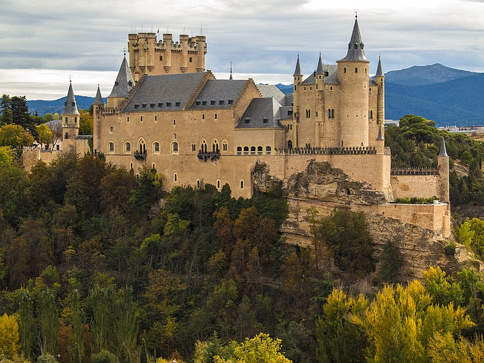

Fortalezas del mundo
El castillo de Bellver

El castillo de Bellver es una fortificación de estilo gótico situada a unos tres kilómetros de la ciudad española de Palma de Mallorca, en Baleares. Fue construido a principios del siglo XIV por orden del rey Jaime II de Mallorca. Se encuentra sobre un monte de 112 metros sobre el nivel del mar, en una zona rodeada de bosque, desde donde se puede contemplar la ciudad, el puerto, la sierra de Tramontana y el Llano de Mallorca; de hecho, su nombre viene del catalán antiguo bell veer, que significa «bella vista». Una de sus peculiaridades es que se trata de uno de los pocos castillos de toda Europa de planta circular, siendo el más antiguo de estos. Actualmente pertenece al Ayuntamiento de Palma, y en él se encuentra el Museo de Historia de la ciudad de Palma, por lo que está abierto al público. En 1931 fue declarado Monumento histórico-artístico. Por tanto, es Bien de Interés Cultural con categoría de Monumento.
El Alcázar de Segovia

El Real Alcázar de Segovia, que data de principios del siglo XII, es uno de los castillos medievales más famosos del mundo y uno de los monumentos más visitados de España. En su milenaria existencia, el Alcázar ha sido castro romano, fortaleza medieval, palacio real, custodio del tesoro real, prisión de estado, Real Colegio de Artillería y Archivo General Militar. Su imponente perfil se levanta, majestuoso, sobre el valle del Eresma y es símbolo de la Ciudad vieja de Segovia, declarada Patrimonio Mundial de la Unesco en 1985.
Durante más de cinco siglos, el Real Alcázar de Segovia fue una de las residencias habituales de los reyes de Castilla y un escenario político de primer orden. Ninguna otra fortaleza del antiguo reino reunió la presencia de tantos monarcas a lo largo del tiempo. Desde la Alta Edad Media hasta la actualidad —durante casi un milenio de historia—, 31 reyes de todas las dinastías han recorrido sus estancias, además de algunos de los personajes más destacados de la historia. Por esta continuidad, la fortaleza segoviana se consagra, junto con el castillo de Windsor, como uno de los espacios europeos con mayor proyección y permanencia regia.